Our investigation is dedicated to the construction
of doubly periodic classical fields in the (1+1)-dimensional
 theory. We study the model of an isolated real scalar field
theory. We study the model of an isolated real scalar field
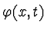
, described by the Lagrangian density:
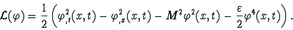
Let us consider the Lagrange-Euler equation:
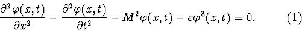
There are two classes of doubly periodic solutions for this equation. If we seek fields in the
traveling wave form:
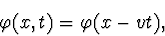
The second class of doubly periodic solutions consists of functions in the
standing wave form:
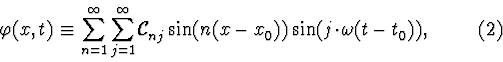
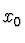
and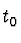
are constants determined by boundary and initial conditions. Equation (1) is a translation-invariant one, so, we can restrict our consideration to the case of zero and without loss of generality. We suppose that the function is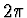
-periodic in space and seek its period in time.Exact standing wave solutions are not known. Approximate solutions for equation (1) with
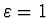
and M=1 have been found under the assumption that all highest harmonics are zeros: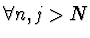
N $"> :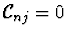
, where N is a large number. Numerical calculations have been made [5] for several values of N. The obtained solutions are very close to each other, but convergence of the sequence of these solutions as Ntends to infinity has yet to be proved.
Provided that
 ,
C. Eugene Wayne [6] has considered
the problem of the construction of periodic and quasi-periodic in time
solutions for the equation (1) with the mass term, depending on
space-coordinate x. He has defined non-resonance conditions for
eigenvalues of the operator
,
C. Eugene Wayne [6] has considered
the problem of the construction of periodic and quasi-periodic in time
solutions for the equation (1) with the mass term, depending on
space-coordinate x. He has defined non-resonance conditions for
eigenvalues of the operator
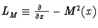
and proved that if these conditions are satisfied, then one can construct periodic and quasi-periodic solutions for equation (1), using a variant of the Kolmogorov, Arnold, Moser (KAM) scheme. C. Eugene Wayne has remarked that although his theorem gives one many periodic solutions, one has no information whether or not they occur in smooth families.